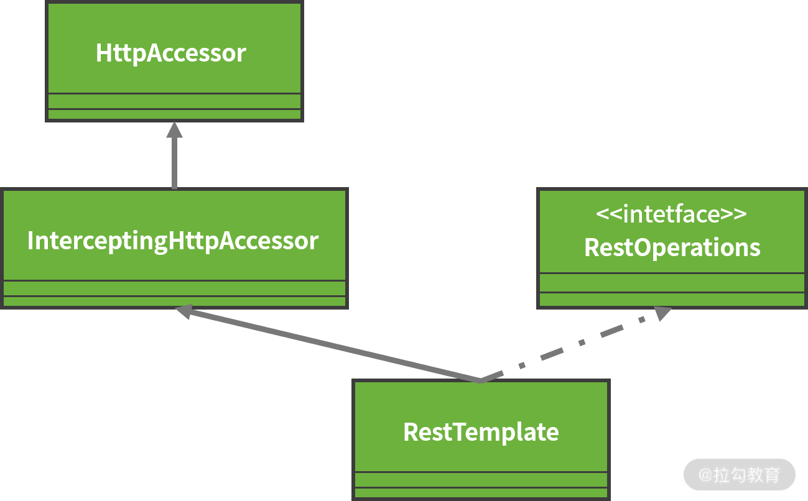

- 00 开篇词 从零开始：为什么要学习 Spring Boot？.md.html
- 01 家族生态：如何正确理解 Spring 家族的技术体系？.md.html
- 02 案例驱动：如何剖析一个 Spring Web 应用程序？.md.html
- 03 多维配置：如何使用 Spring Boot 中的配置体系？.md.html
- 04 定制配置：如何创建和管理自定义的配置信息？.md.html
- 05 自动配置：如何正确理解 Spring Boot 自动配置实现原理？.md.html
- 06 基础规范：如何理解 JDBC 关系型数据库访问规范？.md.html
- 07 数据访问：如何使用 JdbcTemplate 访问关系型数据库？.md.html
- 08 数据访问：如何剖析 JdbcTemplate 数据访问实现原理？.md.html
- 09 数据抽象：Spring Data 如何对数据访问过程进行统一抽象？.md.html
- 10 ORM 集成：如何使用 Spring Data JPA 访问关系型数据库？.md.html
- 11 服务发布：如何构建一个 RESTful 风格的 Web 服务？.md.html
- 12 服务调用：如何使用 RestTemplate 消费 RESTful 服务？.md.html
- 13 服务调用：如何正确理解 RestTemplate 远程调用实现原理？.md.html
- 14 消息驱动：如何使用 KafkaTemplate 集成 Kafka？.md.html
- 15 消息驱动：如何使用 JmsTemplate 集成 ActiveMQ？.md.html
- 16 消息驱动：如何使用 RabbitTemplate 集成 RabbitMQ？.md.html
- 17 安全架构：如何理解 Spring 安全体系的整体架构？.md.html
- 18 用户认证：如何基于 Spring Security 构建用户认证体系？.md.html
- 19 服务授权：如何基于 Spring Security 确保请求安全访问？.md.html
- 20 服务监控：如何使用 Actuator 组件实现系统监控？.md.html
- 21 指标定制：如何实现自定义度量指标和 Actuator 端点？.md.html
- 22 运行管理：如何使用 Admin Server 管理 Spring 应用程序？.md.html
- 23 数据测试：如何使用 Spring 测试数据访问层组件？.md.html
- 24 服务测试：如何使用 Spring 测试 Web 服务层组件？.md.html
- 结束语 以终为始：Spring Boot 总结和展望.md.html
13 服务调用：如何正确理解 RestTemplate 远程调用实现原理？
在 12 讲中，我们详细描述了如何使用 RestTemplate 访问 HTTP 端点的使用方法，它涉及 RestTemplate 初始化、发起请求及获取响应结果等核心环节。今天，我们将基于上一课时中的这些环节，从源码出发让你真正理解 RestTemplate 实现远程调用的底层原理。
初始化 RestTemplate 实例
12 讲中我们提到可以通过 RestTemplate 提供的几个构造函数对 RestTemplate 进行初始化。在分析这些构造函数之前，我们有必要先看一下 RestTemplate 类的定义，如下代码所示：
public class RestTemplate extends InterceptingHttpAccessor implements RestOperations
从上述代码中，我们可以看到 RestTemplate 扩展了 InterceptingHttpAccessor 抽象类，并实现了 RestOperations 接口。接下来我们围绕 RestTemplate 的方法定义进行设计思路的梳理。
首先，我们来看看 RestOperations 接口的定义，这里截取了部分核心方法，如下代码所示：
public interface RestOperations {
<T> T getForObject(String url, Class<T> responseType, Object... uriVariables) throws RestClientException;
<T> ResponseEntity<T> getForEntity(String url, Class<T> responseType, Object... uriVariables) throws RestClientException;
<T> T postForObject(String url, @Nullable Object request, Class<T> responseType,Object... uriVariables) throws RestClientException;
void put(String url, @Nullable Object request, Object... uriVariables) throws RestClientException;
void delete(String url, Object... uriVariables) throws RestClientException;
<T> ResponseEntity<T> exchange(String url, HttpMethod method, @Nullable HttpEntity<?> requestEntity,
Class<T> responseType, Object... uriVariables) throws RestClientException;
…
}
显然，RestOperations 接口定义了 12 讲中介绍到的 get/post/put/delete/exhange 等所有远程调用方法组，这些方法都遵循 RESTful 架构风格而设计。RestTemplate 为这些接口提供了实现机制，这是它的一条代码支线。
然后我们再看 InterceptingHttpAccessor，它是一个抽象类，包含的核心变量如下代码所示：
public abstract class InterceptingHttpAccessor extends HttpAccessor {
private final List<ClientHttpRequestInterceptor> interceptors = new ArrayList<>();
private volatile ClientHttpRequestFactory interceptingRequestFactory;
…
}
通过变量定义，我们明确了 InterceptingHttpAccessor 包含两部分处理功能，一部分负责设置和管理请求拦截器 ClientHttpRequestInterceptor，另一部分负责获取用于创建客户端 HTTP 请求的工厂类 ClientHttpRequestFactory。
同时，我们注意到 InterceptingHttpAccessor 同样存在一个父类 HttpAccessor，这个父类值真正实现了 ClientHttpRequestFactory 的创建及如何通过 ClientHttpRequestFactory 获取代表客户端请求的 ClientHttpRequest 对象。HttpAccessor 的核心变量如下代码所示：
public abstract class HttpAccessor {
private ClientHttpRequestFactory requestFactory = new SimpleClientHttpRequestFactory();
…
}
从以上代码我们可以看到，HttpAccessor 中创建了 SimpleClientHttpRequestFactory 作为系统默认的 ClientHttpRequestFactory。关于 ClientHttpRequestFactory，我们会在本课时的后续内容中进行详细的讨论。
最后，针对这部分内容我们再来梳理下 RestTemplate 的类层结构，如下图所示：

RestTemplate 的类层结构
在 RestTemplate 的类层结构中，我们能快速理解它的设计思想。整个类层结构清晰地分成两条支线，左边支线用于完成与 HTTP 请求相关的实现机制，而右边支线提供了基于 RESTful 风格的操作入口，并使用了面向对象中的接口和抽象类完成这两部分功能的聚合。
RestTemplate 核心执行流程
介绍完 RestTemplate 的实例化过程，接下来我们来分析它的核心执行流程。
作为用于远程调用的模板工具类，我们可以从具备多种请求方式的 exchange 方法入手，该方法的定义如下代码所示：
@Override
public <T> ResponseEntity<T> exchange(String url, HttpMethod method,
@Nullable HttpEntity<?> requestEntity, Class<T> responseType, Object... uriVariables)
throws RestClientException {
//构建请求回调
RequestCallback requestCallback = httpEntityCallback(requestEntity, responseType);
//构建响应体抽取器
ResponseExtractor<ResponseEntity<T>> responseExtractor = responseEntityExtractor(responseType);
//执行远程调用
return nonNull(execute(url, method, requestCallback, responseExtractor, uriVariables));
}
显然，我们应该进一步关注这里的 execute 方法。事实上，无论我们采用 get/put/post/delete 中的哪种方法发起请求，RestTemplate 负责执行远程调用时，使用的都是 execute 方法，该方法定义如下代码所示：
@Override
@Nullable
public <T> T execute(String url, HttpMethod method, @Nullable RequestCallback requestCallback, @Nullable ResponseExtractor<T> responseExtractor, Object... uriVariables) throws RestClientException {
URI expanded = getUriTemplateHandler().expand(url, uriVariables);
return doExecute(expanded, method, requestCallback, responseExtractor);
}
从以上代码中，我们发现 execute 方法首先通过 UriTemplateHandler 构建了一个 URI，然后将请求过程委托给 doExecute 方法进行处理，该方法定义如下代码所示：
protected <T> T doExecute(URI url, @Nullable HttpMethod method, @Nullable RequestCallback requestCallback,
@Nullable ResponseExtractor<T> responseExtractor) throws RestClientException {
Assert.notNull(url, "URI is required");
Assert.notNull(method, "HttpMethod is required");
ClientHttpResponse response = null;
try {
//创建请求对象
ClientHttpRequest request = createRequest(url, method);
if (requestCallback != null) {
//执行对请求的回调
requestCallback.doWithRequest(request);
}
//获取调用结果
response = request.execute();
//处理调用结果
handleResponse(url, method, response);
//使用结果提取从结果中提取数据
return (responseExtractor != null ? responseExtractor.extractData(response) : null);
}
catch (IOException ex) {
String resource = url.toString();
String query = url.getRawQuery();
resource = (query != null ? resource.substring(0, resource.indexOf('?')) : resource);
throw new ResourceAccessException("I/O error on " + method.name() +
" request for \"" + resource + "\": " + ex.getMessage(), ex);
}
finally {
if (response != null) {
response.close();
}
}
}
从上述方法中，我们发现使用 RestTemplate 进行远程调用时，主要涉及创建请求对象、执行远程调用及处理响应结果这三大步骤，下面我们分别展开说明下。
创建请求对象
创建请求对象的入口方法如下代码所示：
ClientHttpRequest request = createRequest(url, method);
通过跟踪上面的 createRequest 方法，我们发现流程执行到了前面介绍的 HttpAccessor 类，如下代码所示：
public abstract class HttpAccessor {
private ClientHttpRequestFactory requestFactory = new SimpleClientHttpRequestFactory();
…
protected ClientHttpRequest createRequest(URI url, HttpMethod method) throws IOException {
ClientHttpRequest request = getRequestFactory().createRequest(url, method);
if (logger.isDebugEnabled()) {
logger.debug("Created " + method.name() + " request for \"" + url + "\"");
}
return request;
}
}
创建 ClientHttpRequest 的过程是一种典型的工厂模式应用场景，这里我们直接创建了一个实现 ClientHttpRequestFactory 接口的 SimpleClientHttpRequestFactory 对象，然后再通过这个对象的 createRequest 方法创建了客户端请求对象 ClientHttpRequest 并返回给上层组件进行使用。ClientHttpRequestFactory 接口的定义如下代码所示：
public interface ClientHttpRequestFactory {
//创建客户端请求对象
ClientHttpRequest createRequest(URI uri, HttpMethod httpMethod) throws IOException;
}
在 Spring 中，存在一批 ClientHttpRequestFactory 接口的实现类，而SimpleClientHttpRequestFactory 是它的默认实现，在实现自定义的 ClientHttpRequestFactory 时，开发人员也可以根据需要自行选择。
为简单起见，我们直接跟踪 SimpleClientHttpRequestFactory 的代码，来看它的 createRequest 方法，如下代码所示：
private boolean bufferRequestBody = true;
@Override
public ClientHttpRequest createRequest(URI uri, HttpMethod httpMethod) throws IOException {
HttpURLConnection connection = openConnection(uri.toURL(), this.proxy);
prepareConnection(connection, httpMethod.name());
if (this.bufferRequestBody) {
return new SimpleBufferingClientHttpRequest(connection, this.outputStreaming);
}
else {
return new SimpleStreamingClientHttpRequest(connection, this.chunkSize, this.outputStreaming);
}
}
在上述 createRequest 中，首先我们通过传入的 URI 对象构建了一个 HttpURLConnection 对象，然后对该对象进行一些预处理，最后构造并返回一个 ClientHttpRequest 实例。
通过翻阅代码，我们发现上述的 openConnection 方法只是通过 URL 对象的 openConnection 方法返回了一个 UrlConnection，而 prepareConnection 方法也只是完成了对 HttpUrlConnection 超时时间、请求方法等常见属性的设置。
在这里，我们注意到 bufferRequestBody 参数的值为 true，因此通过 createRequest 方法最终返回的结果是一个 SimpleBufferingClientHttpRequest 对象。
执行远程调用
一旦获取了请求对象，我们就可以发起远程调用并获取响应了，RestTemplate 中的入口方法如下代码所示：
response = request.execute();
这里的 request 就是前面创建的 SimpleBufferingClientHttpRequest 类，我们可以先来看一下该类的类层结构，如下图所示：

SimpleBufferingClientHttpRequest 类层结构图
在上图的 AbstractClientHttpRequest 中，定义了如下代码所示的 execute 方法。
@Override
public final ClientHttpResponse execute() throws IOException {
assertNotExecuted();
ClientHttpResponse result = executeInternal(this.headers);
this.executed = true;
return result;
}
protected abstract ClientHttpResponse executeInternal(HttpHeaders headers) throws IOException;
AbstractClientHttpRequest 类的作用是防止 HTTP 请求的 Header 和 Body 被多次写入，所以在 execute 方法返回之前，我们设置了一个 executed 标志位。同时，在 execute 方法中，我们最终调用了一个抽象方法 executeInternal，这个方法的实现在 AbstractClientHttpRequest 的子类 AbstractBufferingClientHttpRequest 中，如下代码所示：
@Override
protected ClientHttpResponse executeInternal(HttpHeaders headers) throws IOException {
byte[] bytes = this.bufferedOutput.toByteArray();
if (headers.getContentLength() < 0) {
headers.setContentLength(bytes.length);
}
ClientHttpResponse result = executeInternal(headers, bytes);
this.bufferedOutput = new ByteArrayOutputStream(0);
return result;
}
protected abstract ClientHttpResponse executeInternal(HttpHeaders headers, byte[] bufferedOutput) throws IOException;
和 AbstractClientHttpRequest 类一样，我们进一步梳理了一个抽象方法 executeInternal，这个抽象方法通过最底层的 SimpleBufferingClientHttpRequest 类实现，如下代码所示：
@Override
protected ClientHttpResponse executeInternal(HttpHeaders headers, byte[] bufferedOutput) throws IOException {
addHeaders(this.connection, headers);
// JDK <1.8 doesn't support getOutputStream with HTTP DELETE
if (getMethod() == HttpMethod.DELETE && bufferedOutput.length == 0) {
this.connection.setDoOutput(false);
}
if (this.connection.getDoOutput() && this.outputStreaming) {
this.connection.setFixedLengthStreamingMode(bufferedOutput.length);
}
this.connection.connect();
if (this.connection.getDoOutput()) {
FileCopyUtils.copy(bufferedOutput, this.connection.getOutputStream());
}
else {
// Immediately trigger the request in a no-output scenario as well
this.connection.getResponseCode();
}
return new SimpleClientHttpResponse(this.connection);
}
这里通过 FileCopyUtils.copy 工具方法，我们把结果写入输出流上了，executeInternal 方法最终返回的结果是一个包装了 Connection 对象的 SimpleClientHttpResponse。
处理响应结果
一个 HTTP 请求处理的最后一步是从 ClientHttpResponse 中读取输入流，然后格式化为一个响应体并将其转化为业务对象，入口代码如下所示：
//处理调用结果
handleResponse(url, method, response);
//使用结果提取从结果中提取数据
return (responseExtractor != null ? responseExtractor.extractData(response) : null);
我们先来看这里的 handleResponse 方法，定义如下代码所示：
protected void handleResponse(URI url, HttpMethod method, ClientHttpResponse response) throws IOException {
ResponseErrorHandler errorHandler = getErrorHandler();
boolean hasError = errorHandler.hasError(response);
if (logger.isDebugEnabled()) {
try {
logger.debug(method.name() + " request for \"" + url + "\" resulted in " +
response.getRawStatusCode() + " (" + response.getStatusText() + ")" +
(hasError ? "; invoking error handler" : ""));
}
catch (IOException ex) {
// ignore
}
}
if (hasError) {
errorHandler.handleError(url, method, response);
}
}
以上代码中，通过 getErrorHandler 方法我们获取了一个 ResponseErrorHandler，如果响应的状态码错误，我们可以调用 handleError 来处理错误并抛出异常。在这里，我们发现这段代码实际上并没有真正处理返回的数据，而只是执行了错误处理。
而获取响应数据并完成转化的工作是在 ResponseExtractor 中，该接口定义如下代码所示：
public interface ResponseExtractor<T> {
@Nullable
T extractData(ClientHttpResponse response) throws IOException;
}
在 RestTemplate 类中，我们定义了一个 ResponseEntityResponseExtractor 内部类实现了ResponseExtractor 接口，如下代码所示：
private class ResponseEntityResponseExtractor <T> implements ResponseExtractor<ResponseEntity<T>> {
@Nullable
private final HttpMessageConverterExtractor<T> delegate;
public ResponseEntityResponseExtractor(@Nullable Type responseType) {
if (responseType != null && Void.class != responseType) {
this.delegate = new HttpMessageConverterExtractor<>(responseType, getMessageConverters(), logger);
}
else {
this.delegate = null;
}
}
@Override
public ResponseEntity<T> extractData(ClientHttpResponse response) throws IOException {
if (this.delegate != null) {
T body = this.delegate.extractData(response);
return ResponseEntity.status(response.getRawStatusCode()).headers(response.getHeaders()).body(body);
}
else {
return ResponseEntity.status(response.getRawStatusCode()).headers(response.getHeaders()).build();
}
}
}
在上述代码中，ResponseEntityResponseExtractor 中的 extractData 方法本质上是将数据提取部分的工作委托给了一个代理对象 delegate，而这个 delegate 的类型就是 HttpMessageConverterExtractor。
从命名上看，我们不难看出 HttpMessageConverterExtractor 类的内部使用了 12 讲介绍的 HttpMessageConverter 实现消息的转换，如下代码所示（代码做了裁剪）：
public class HttpMessageConverterExtractor<T> implements ResponseExtractor<T> {
private final List<HttpMessageConverter<?>> messageConverters;
@Override
@SuppressWarnings({"unchecked", "rawtypes", "resource"})
public T extractData(ClientHttpResponse response) throws IOException {
MessageBodyClientHttpResponseWrapper responseWrapper = new MessageBodyClientHttpResponseWrapper(response);
if (!responseWrapper.hasMessageBody() || responseWrapper.hasEmptyMessageBody()) {
return null;
}
MediaType contentType = getContentType(responseWrapper);
try {
for (HttpMessageConverter<?> messageConverter : this.messageConverters) {
if (messageConverter instanceof GenericHttpMessageConverter) {
GenericHttpMessageConverter<?> genericMessageConverter =
(GenericHttpMessageConverter<?>) messageConverter;
if (genericMessageConverter.canRead(this.responseType, null, contentType)) {
return (T) genericMessageConverter.read(this.responseType, null, responseWrapper);
}
}
if (this.responseClass != null) {
if (messageConverter.canRead(this.responseClass, contentType)) {
return (T) messageConverter.read((Class) this.responseClass, responseWrapper);
}
}
}
}
…
}
上述方法看上去有点复杂，但核心逻辑很简单，首先遍历 HttpMessageConveter 列表，然后判断其是否能够读取数据，如果能就调用 read 方法读取数据。
最后，我们讨论下 HttpMessageConveter 中如何实现 read 方法。
先来看 HttpMessageConveter 接口的抽象实现类 AbstractHttpMessageConverter，在它的 read 方法中我们同样定义了一个抽象方法 readInternal，如下代码所示：
@Override
public final T read(Class<? extends T> clazz, HttpInputMessage inputMessage) throws IOException, HttpMessageNotReadableException {
return readInternal(clazz, inputMessage);
}
protected abstract T readInternal(Class<? extends T> clazz, HttpInputMessage inputMessage) throws IOException, HttpMessageNotReadableException;
在 12 讲中，我们提到 Spring 提供了一系列的 HttpMessageConveter 实现消息的转换，而最简单的实现方式是 StringHttpMessageConverter，该类的 read 方法如下代码所示：
@Override
protected String readInternal(Class<? extends String> clazz, HttpInputMessage inputMessage) throws IOException {
Charset charset = getContentTypeCharset(inputMessage.getHeaders().getContentType());
return StreamUtils.copyToString(inputMessage.getBody(), charset);
}
StringHttpMessageConverter 的实现过程：首先从输入消息 HttpInputMessage 中通过 getBody 方法获取消息体，也就是一个 ClientHttpResponse 对象，再通过 copyToString 方法从该对象中读取数据，并返回字符串结果。
至此，通过 RestTemplate 发起、执行及响应整个 HTTP 请求的完整流程就介绍完毕了。
从源码解析到日常开发
本节课涉及了大量关于如果处理 HTTP 请求的实现细节，而这些实现细节对开发人员理解 HTTP 协议、掌握 HTTP 协议及远程调用很大帮助，后期，你可以根据实际需要针对某些细节进一步深入分析。
同时，通过对 RestTemplate 本身及围绕它的多个工具类的设计和实现过程进行梳理，也可以加深我们对抽象类与接口的标准设计理念的理解，并将这些设计理念付诸日常开发过程中。
小结与预告
我们要想深入理解和掌握一个 HTTP 请求的处理过程，剖析 RestTemplate 工具类的实现很有必要。
RestTemplate 中提供了创建请求对象、执行远程调用及处理响应结果这三大步骤的完整实现思路。本节课中我们对这些步骤进行了详细说明，并分析了其中包含的设计理念及实现技巧。